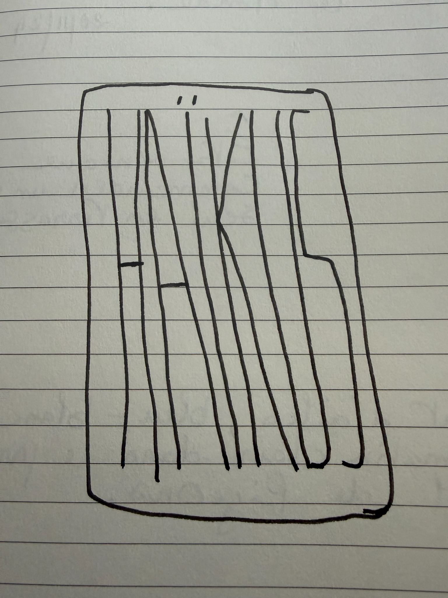

Sur le ciment froid,Un papillon égaréAttend son heure.

Minuscules poèmes
Haïkus
Quelques instants pris au passage, retrouvés entre les pages d’un carnet.
Bien arrivés.Traversée de la France,Vent tempétueux.
Cimes des hauts pinsEnsoleillées au couchantElles rosissent.
Les grains de sableS’effraient des monstres rochersQui les surplombent.
Vent qui refroiditLes oreilles et le front— Midi, la plage.
Les manteaux mouillés,Après la promenade,Sèchent au sous-sol.
Le grand feu de boisRéchauffe les cœurs meurtrisPetit à petit.
Sont-elles fêléesLes cloches de l’église ?— Sept heures sonnent fort.
Le chef courroucéTraverse notre bureau— Un corbeau braillard.
Vent en bourrasquesTout bouge autour de moi.Tempête sur nous.
L’œil, le nez gouttant !Le temps a déjà changé,Le froid arrive.
Place Masséna,Vivent des lumièresTrès électriques.
Un maigre moineauSe pose et admireLa lune blême.
Inventons un motQui dira notre amourImmarcescible.
Dans l’obscurité,Près de la rivièrePasse un chien noir.
Un livre poséSur la commode verniePense le Monde.
Être uniqueCommander un café fortSeul en terrasse.
Bruit d’ailes, bleu-blanc-grisAu matin clair dans le parcEnvol de pigeons.
Midi appétitLe bistrot des serruriersDouceur monacale.
Le stylo qui fuitTache sur le papierDécore mes doigts.
Sur la collineJe sème mes cailloux peints.Qui les trouvera ?
La mer fait roulerLes galets de pierre grise.Elle les avale.
Un canoë glisseSans bruit sur la mer froideAu soleil couchant.
Sous le drap rougeCorps droit, mains sur le ventreJe suis un gisant.
Le far sort du fourBrûlant, odorant, doré.Qui n’aurait pas faim ?
Comme un gâteau— Les montagnes du lointain —Couvert de sucre.
Dans ma chambre, seul,Volets fermés, noir completJe rêve dormir.
Le coup de canonDéchire l’air encore froid— Fin de matinée.
Le chêne tout nuAprès la chute des glandsRésiste aux vents.
Verre de vin blancSaveurs étincelantesQui mènent au ciel.
Les oies bernachesQuand le soir vient sur la merNe se quittent pas.
Whisky irlandaisPour admirer le soleilPerçant mon verre.
Arrivée QuimperPluie battante, parapluiesDes congés, jour 1.